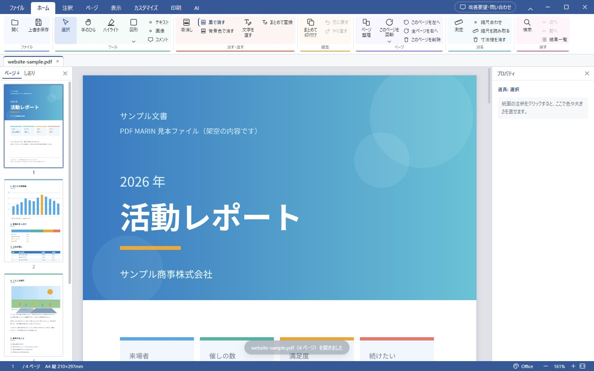
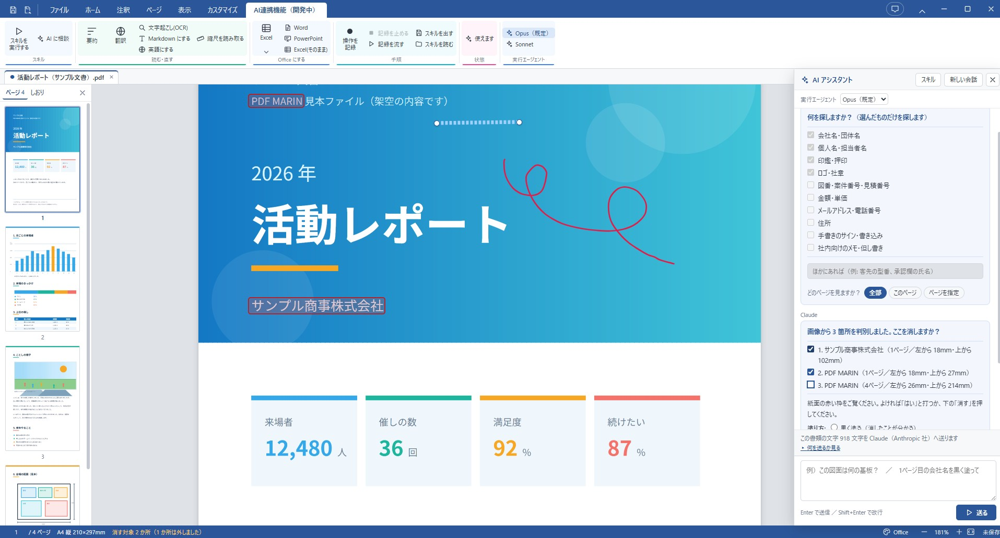

Features
Screen
「ここを消して」「もっとこうしたい」のように、AI と話しながら 細かい操作を進められる仕組みを育てています。 いまは墨消しから、少しずつ形にしているところです。

墨消しの見本です。消したほうがよさそうな所を見つけ、赤い枠で示して確認してから消します。 黒く塗るだけでなく、文字も画像の中身も本当に取り除きます。
AI の機能を使うには、お手持ちの Claude Code が必要です。 AI はあなた自身の契約で動き、こちらで利用料をいただくことはありません。 くわしくは利用規約をご覧ください。
Setup
管理者のパスワードは要りません。自分のパソコンのユーザー領域に入ります。
初めて実行したとき、Windows の青い画面 （「WindowsによってPCが保護されました」）が出ます。 ［詳細情報］→［実行］で進められます。
これは「危ないから」ではなく、発行元を証明する電子署名を付けていないからです。 署名には毎年お金のかかる証明書が必要で、個人が無料で配っているソフトには 付いていないことがよくあります。
落としたファイルが途中ですり替わっていないかは、 SHA-256 という指紋の値で確かめられます。 配布を始めるときに、この場所に載せます。
Requirements
Releases
Feedback
気づいたことを、ここからそのまま送れます。届いた声から順に直していきます。 お名前は要りません。アプリの右上［改善要望・問い合わせ］からも同じものを送れます。